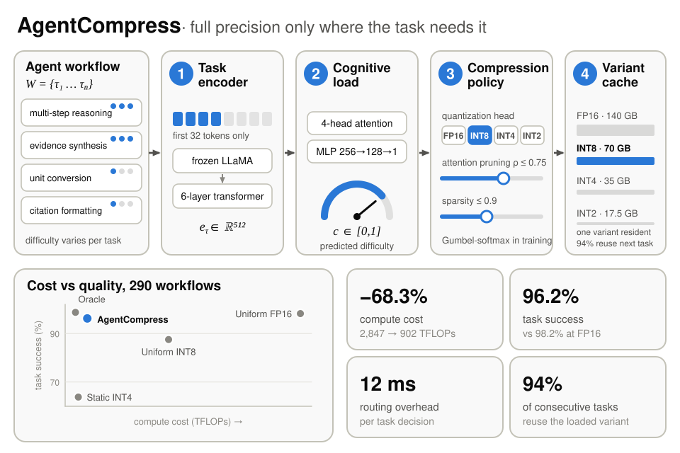

Three days after the pruning paper, AgentCompress went up. Zuhair Ahmed Khan Taha is the first author; I am second, with Shahnawaz Alam.
A research agent might survey papers, form a hypothesis, design an experiment, clean data and format citations, all with one 70B model at full precision. The hypothesis step needs that model. The citation step does not. Quantizing everything to INT8 saves compute, but it cuts the reasoning steps as hard as the clerical ones.
How it works
AgentCompress reads the first 32 tokens of each step, estimates how demanding the step is, and runs it on an FP16, INT8, INT4 or INT2 copy of LLaMA-2-70B. Only one copy fits in the GPU memory we had, so a cache that weighs how often and how recently each copy was used decides which one stays loaded.
{kind=link}

What the paper reports
On a benchmark of 290 research workflows, 68.3% less compute than uniform FP16 at 96.2% task success, against 98.2% for the uncompressed model and 87.5% for uniform INT8. Hypothesis steps stay at FP16 most of the time. Citation steps drop to four bits or fewer.
Two caveats I would read first
The benchmark and its human difficulty labels are not public, so the public notebook can only run the pipeline on synthetic workflows. I wrote about what that notebook does and does not show in July.
And about 8% of steps lose more than 10% quality. Most are steps that look routine and are not, like "summarise the methodology section" when the methodology is a new proof technique.